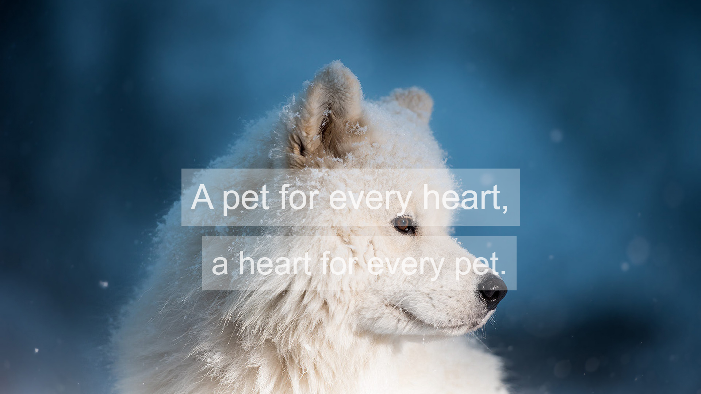

Adoption Requirements for Adopter..

Congratulations on adopting a pet!
You are embarking on a wonderful and rewarding relationship.
Because adopting a new pet comes with a lot of change for both pet and pet parent,
we’ve compiled a checklist to help make the transition as smooth as possible
Questions for All Adopters:
Do you have any other pets and how will they react to a new pet?
Is your current residence suited to the pet you’re considering?
How will your social life or work obligations affect your ability to care for a pet?
Do you have a plan for your new pet during vacations and/or work travel?
How do the people you live with feel about having a pet in the house?
Some expenses are mandatory for all pets, including:
Food
Routine veterinary care
Licensing according to local regulations
Collars, leashes and identification tags
Kitty litter and box
Basic grooming equipment and supplies.
Other expenditures may not be required but are highly recommended:
Permanent identification, such as a microchip or tattoo
Training classes
Additional grooming supplies or professional grooming (depending on your new pet’s needs)
A spare collar or leash
A bed and toys
A crate or carrier
Necessary Items for Dogs:
Food and water bowls
Food (canned and/or dry)
Collar
Four to six-foot leash
ID tag with your phone number
Hard plastic carrier or foldable metal crate
Dog bed
Doggy shampoo and conditioner
Nail clippers
Canine toothbrush and toothpaste
Brush or comb (depends on your pet’s coat length and type)
Super-absorbent paper towels
Sponge and scrub brush
Non-toxic cleanser
Enzymatic odor neutralizer
Plastic poop baggies (biodegradable ones are best) or pooper scooper
Absorbent house-training pads
Variety of toys (a ball, rope, chew toy and puzzle toy are good starts)
Variety of treats (such as small cookies, larger rawhides, etc.)
First-aid supplies
Baby gate(s)
Necessary Items for Cats:
Food and water bowls
Food (canned and/or dry)
Litter box and scooper
Kitty litter
Collar
ID tag with your phone number
Hard plastic carrier
Nail clippers
Feline toothbrush and toothpaste
Brush or comb (depends on your cat’s coat length and type)
Super-absorbent paper towels
Sponge and scrub brush
Non-toxic cleanser
Enzymatic odor neutralizer
Variety of toys (toys including catnip are a favorite)
First-aid supplies